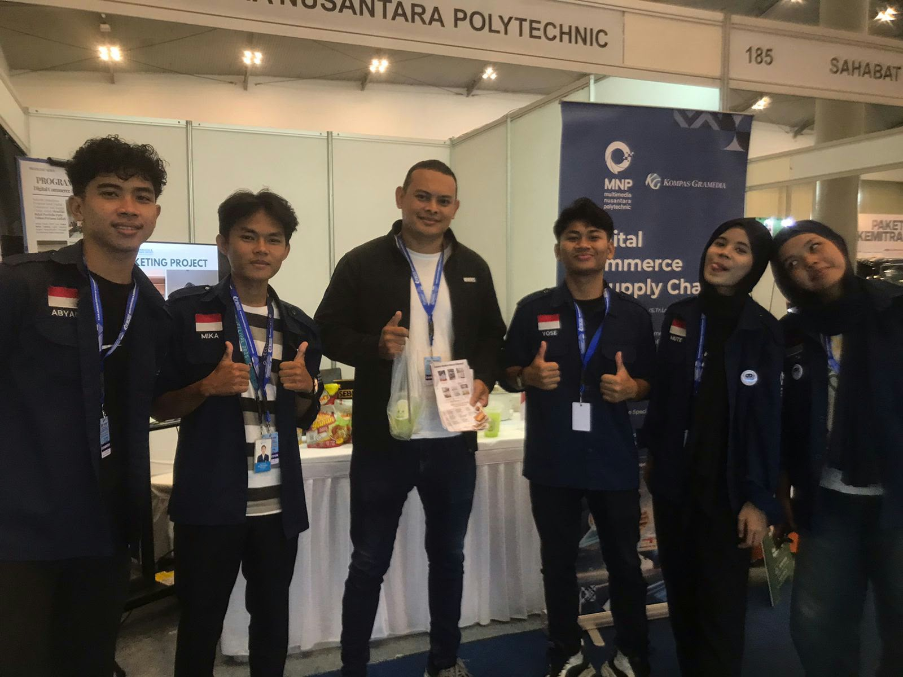

Work & Organizational Experience
Perjalanan karir dan pengalaman organisasi yang membentuk keahlian saya


Head of Sponsorship Division
ECLIVAL 2026
- Memimpin divisi sponsorship dalam merancang proposal dan strategi pendanaan event.
- Melakukan negosiasi dan membangun hubungan kolaborasi dengan berbagai calon sponsor.
- Mengatur pemenuhan hak-hak sponsor selama penyelenggaraan acara.


Head of Marketing & Partnership
Anaksmatangerang
- Merancang kampanye pemasaran digital untuk meningkatkan keterlibatan audiens media sosial.
- Menjalin kerja sama strategis dengan komunitas dan mitra eksternal.
- Mengawasi pembuatan konten kreatif dan perencanaan promosi.


Business Owner
Poo Store
- Mengelola operasional bisnis e-commerce independen dari perencanaan hingga penjualan.
- Mengimplementasikan strategi pemasaran digital dan pelayanan pelanggan (customer engagement).
- Mengatur rantai pasok (supply chain), persediaan produk, dan pencatatan keuangan.


Junior Barista
F&B Retail
- Melayani pelanggan secara profesional dan menjaga kepuasan konsumen.
- Berkomunikasi secara efektif dalam tim untuk menjaga efisiensi operasional harian.
- Memahami prinsip dasar manajemen stok dan kualitas produk F&B.



Exhibitor IFBC 2025
Multimedia Nusantara Polytechnic
- Berkontribusi aktif dalam pelaksanaan operasional dan kelancaran rangkaian acara.
- Berkoordinasi dengan tim lintas divisi untuk penanganan pengunjung dan alur kegiatan.
- Mengelola kebutuhan logistik serta membantu teknis lapangan selama acara berlangsung.


SHARP Greenerator 2025
SHARP Greenerator
- Berkontribusi aktif dalam pelaksanaan operasional dan kelancaran rangkaian acara.
- Berkoordinasi dengan tim lintas divisi untuk penanganan pengunjung dan alur kegiatan.
- Mengelola kebutuhan logistik serta membantu teknis lapangan selama acara berlangsung.


Nongshim Shin Sational Day
Nongshim
- Berkontribusi aktif dalam pelaksanaan operasional dan kelancaran rangkaian acara.
- Berkoordinasi dengan tim lintas divisi untuk penanganan pengunjung dan alur kegiatan.
- Mengelola kebutuhan logistik serta membantu teknis lapangan selama acara berlangsung.